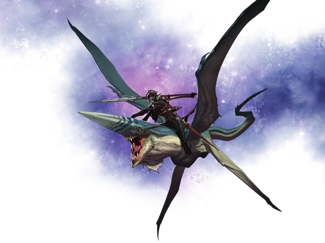

Звёздный копьеносец
Star Lancer
Большой Небожитель, нейтральный

Класс Доспеха 15 (природный доспех)
Хиты 60 (8к10 + 16)
Скорость 0 футов, летая 50 футов
| мод | спас | ||
|---|---|---|---|
| СИЛ | 18 | +4 | +4 |
| ЛОВ | 15 | +2 | +4 |
| ТЕЛ | 15 | +2 | +4 |
| мод | спас | ||
|---|---|---|---|
| ИНТ | 10 | +0 | +0 |
| МДР | 13 | +1 | +1 |
| ХАР | 8 | −1 | −1 |
Навыки Восприятие +3, Скрытность +4
Чувства пассивное Восприятие 13
Языки Небесный, Телепатия 120 фт.
Опасность 2 (450 опыта)
Бонус мастерства +2
Особенности
Облёт. Звездный копьеносец не провоцирует атаки вылетая из досягаемости врага.
Действия
Рог. . Рукопашная атака оружием: +6 к попаданию, досягаемость 5 фт., одна цель. Попадание: 7 (1к6 + 4) колющего урона. Если звездный копьеносец перемещается по крайней мере на 20 футов прямо к цели непосредственно перед попаданием, цель дополнительно получает 10 (3к6) колющего урона.
Покров невидимости (3/день). Копьеносец и одно сидящее на нём существо (выбирается копьеносцем) магическим образом становятся невидимыми. Этот эффект длится до тех пор, пока копьеносец или сидящее на нем верхом существо, не атакует или не накладывает заклинание, или пока не закончится концентрация копьеносца (как при концентрации на заклинании). Любое снаряжение, которое несут или носят невидимые существа, также становится невидимым на время действия Покрова невидимости.
Описание
Окаменевшие оболочки мёртвых богов дрейфуют в Астральном море. Их громадные тела испещрены естественными туннелями и пещерами. Исследуя внутренности одного из этих мёртвых богов, гитъянки-ксеноманты обнаружили огромную пещеру, содержащую множество раннее не встречавшихся им крылатых существ. С помощью телепатии обитатели пещеры допросили нарушивших их покой гитъянки, и те поторопились предложить им союз. Крылатые существа быстро привязались к гитъянки.
Гитъянки называют крылатых существ звёздными копьеносцами(«вах’к’рел» на языке гитов). Они пришли к выводу, что копьеносцы— это реинкарнации самых преданных поклонников мёртвого бога. Когда это существо умирает, в тот же миг его душа возвращается в Великую пещеру — пустое сердце почившего бога. Там магическим образом со дна пещеры поднимается новое тело взрослого звёздного копьеносца, которое становится пристанищем для прибывшей души. Пока мёртвый бог и его Великая пещера остаются нетронутыми, число звёздных уланов в мультивселенной постоянно и никогда не меняется.
Звёздный копьеносец похож на акулу, хотя у него четыре крыла и длинный хвост. На его голове есть острый выступ, которым он пронзает врагов. Гитъянки любят использовать звёздных копьеносцев в качестве верховых животных, переправляясь на них небольшими группами через Астральное море.
У копьеносцев есть врожденная способность делать себя и своего наездника невидимыми, что делает его идеальным для секретных операций и засад.